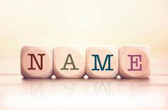
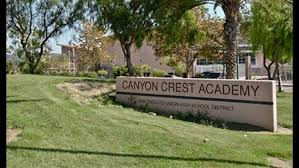
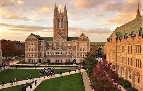

I enjoy thinking about names in general, but I rarely take the time to appreciate my own. Though mine doesn’t carry with it much of a significant meaning or family legacy, I find the consistency of names relatively pleasing. Besides its mediocrity, James means "supplanter,” originating from the Biblical story of two twins: Ya'akov and Esav. I’d like to imagine my parents had this in mind when giving me the name, because they’d always joke that my twin sister and I underwent something similar, though the alternative (Ryan) says otherwise. That being said, my last name (Abdou) holds a place in my mind comparable to that of James, a part of everyday life I don’t think about too often, but wouldn’t mind making more prominent.

I’ve always loved school. At three years old, I began my education at Lifetime Montessori Preschool before heading to The Cambridge School for 10 years. Though I do not remember much about Montessori, I made many great memories at Cambridge I probably won’t forget any time soon. While there, however, small class sizes and overachievers made for a perfectionist environment, and substantial restrictions on both language and uniform often made it difficult to feel comfortable. Nonetheless, avoiding the troubles of moving from elementary to middle school was a very nice bonus that came with Cambridge. That being said, I made the decision to come to Canyon Crest Academy (CCA) as opposed to finishing high school at Cambridge because of academics and the aforementioned reasons, and I do not regret that choice.

I don’t know what to think of the future. I have not yet really looked at colleges, unlike many of my peers. It’s hard to predict what’ll happen tomorrow, let alone something post-graduation or a decade from now. I’d like to imagine that when I’m old, I’ll tell the youngsters that “there wasn’t AI back in my day,” that “events used to be outside, not online,” and that there was a mass quarantining way back in 2020. All jokes aside, I’m not exactly sure what I want to pursue, or really what my goals are at all. I’ve considered something STEM for a while now, but as of this year I’m no longer too sure, seeing as I’ve found other interests elsewhere. I’m currently hoping that something will just happen—that one day I’ll stumble upon a burst of inspiration that’ll send me down some sort of path of professional pursuit. Until then, however, I’m not sure.
